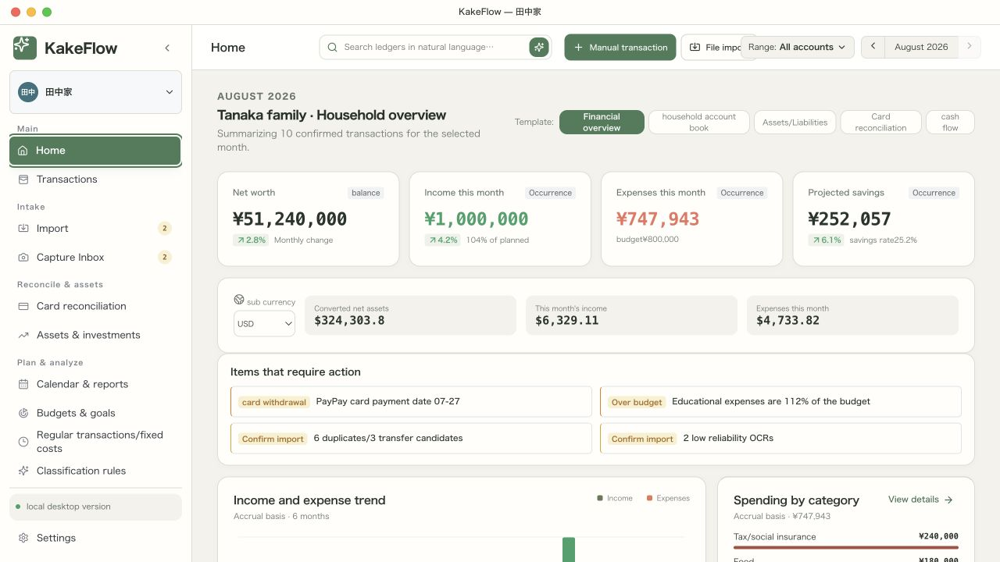
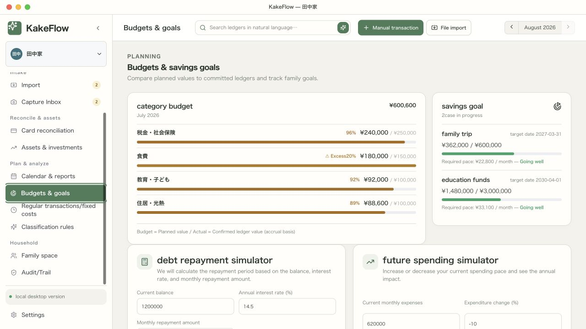
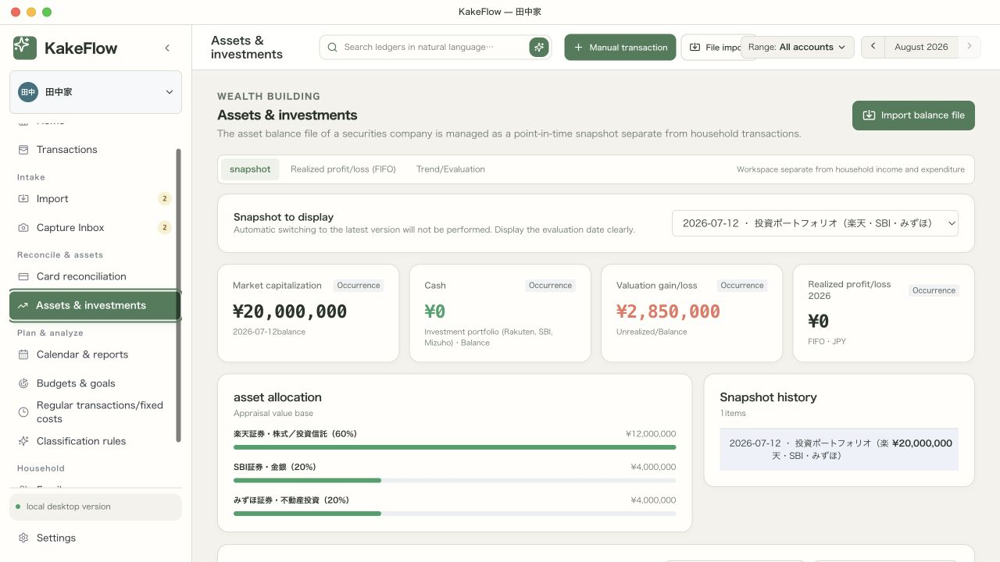

Daily spending
Review household cash flow, categories, and transactions.


KakeFlow · v1.2.1 · LOCAL-FIRST · OPEN SOURCE
Bring accounts, spending, and investments into a local financial picture you can verify.
v1.2.1 · macOS ARM64. Ad-hoc signed and not notarized.
Financial data stays on your device.
Trace numbers back to source evidence.
On-device OCR. Explicit review. No automatic payments.
Grocery · ¥1,280
2026-10-03 · syntheticDouble-entry, with source evidence
Review candidates before posting. Trace transactions to their original file and row.VTI · 5 shares
2026-10-01 · syntheticReal desktop screens · synthetic Tanaka family data
Review household cash flow, categories, and transactions.

Track budget limits, recurring costs, and savings goals.

Review holdings, valuation, gains, dividends, and allocation.

Multiple source imports, budgets, recurring costs, card matching, and investments. Encrypted SQLCipher ledger. App UI: Japanese, English, Vietnamese.
Download the DMG. Move KakeFlow to Applications. If macOS blocks the first launch, use System Settings → Privacy & Security → Open Anyway.
v1.2.1 release notes →Browser: a focused foundation. Account-free encrypted vault, local receipt OCR, source comparison, approval, double-entry posting, and encrypted export/restore. Desktop connectors, budgets, and investments are not available here.
Explore browser versionOCR and category suggestions run on device. Missing dates are not invented; incomplete candidates stay outside the ledger. Posting requires explicit approval. KakeFlow does not initiate payments. Desktop and browser backups are separate formats.
Security policy →